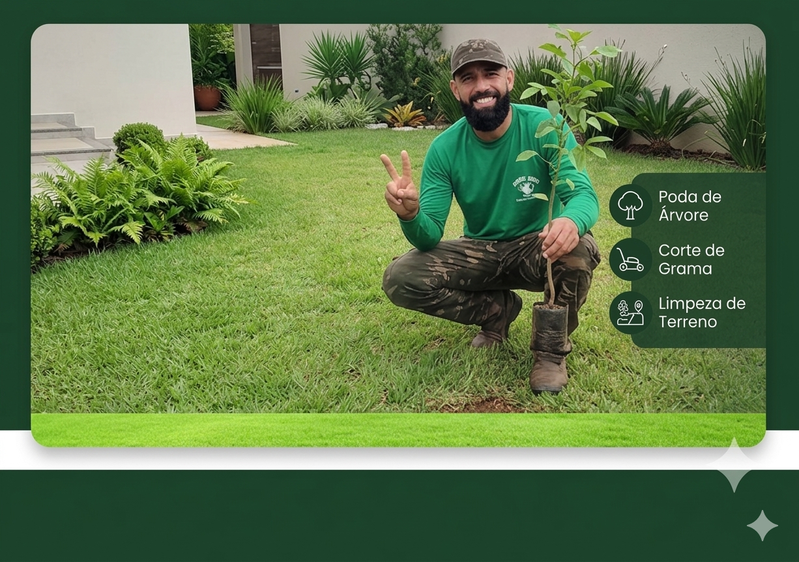
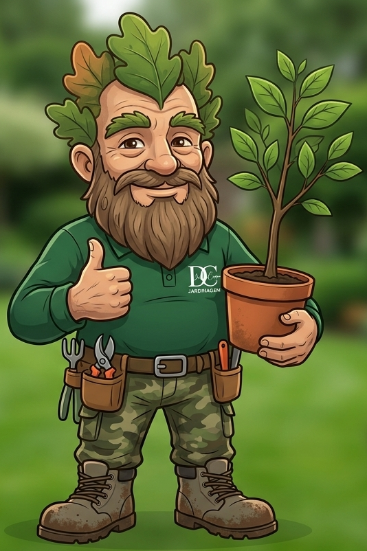
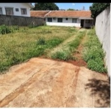
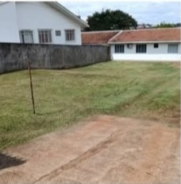
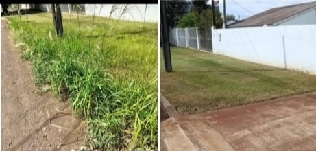
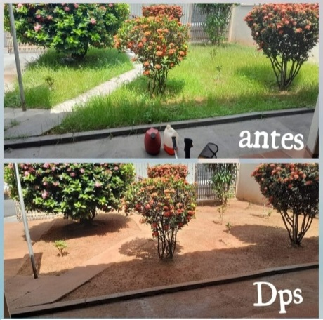

Derlan Cristian: Transformando terrenos brutos em espaços de lazer e beleza com técnicas profissionais de jardinagem.


"O mato está alto? O Derlan resolve! Veja as transformações aqui embaixo."
Poda de formação e limpeza para árvores e cercas-vivas.
Preparação do solo e escolha das espécies ideais para seu clima.
Roçada profissional com remoção de detritos e entulhos.
Cronograma mensal para manter seu gramado sempre verde.
Arraste o círculo central para comparar

Antes
DepoisTransformações rápidas e definitivas em diversos cenários.

Remoção de braquiária e nivelamento de gramado frontal.

Poda artística de ixoras e limpeza de base com forração orgânica.
Não deixe o mato tomar conta do seu patrimônio. Atendemos condomínios, empresas e residências em Juiz de Fora.
(32) 99803-6668
Localização
Juiz de Fora - MG